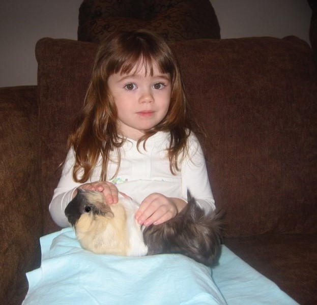

Beautiful Ursula.
0000-0000

Originally and unfortunately named Chicken, this guinea pig was renamed almost equally questionably, because five year old me liked the name Ursula but obviously didn't want my little pet to hold the namesake of an evil sea witch, so she became Beautiful Ursula. She was best known for squeaking at the open refrigerator door as a sneaky way of asking for celery. She was, indeed, beautiful.
